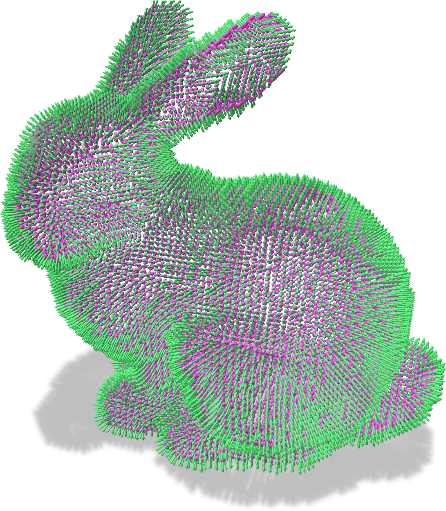
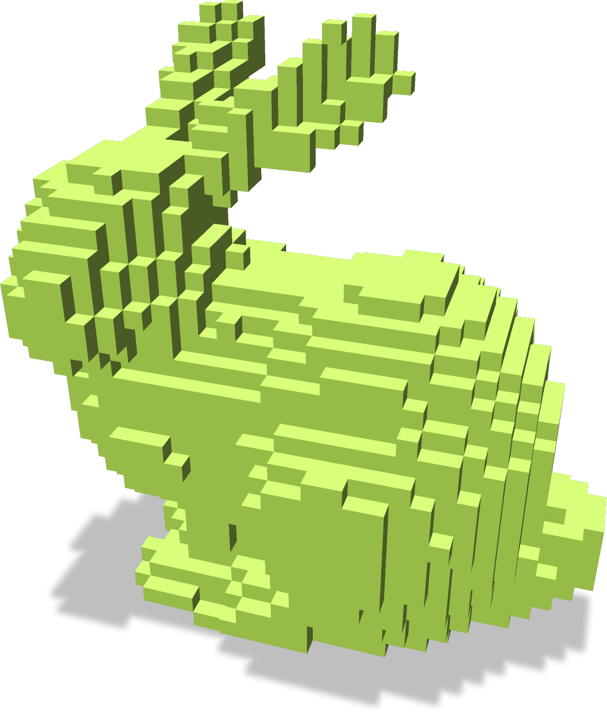
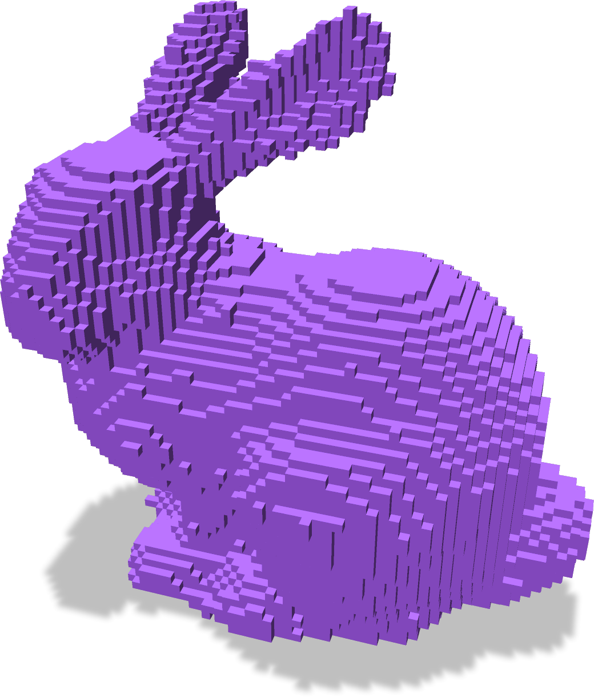
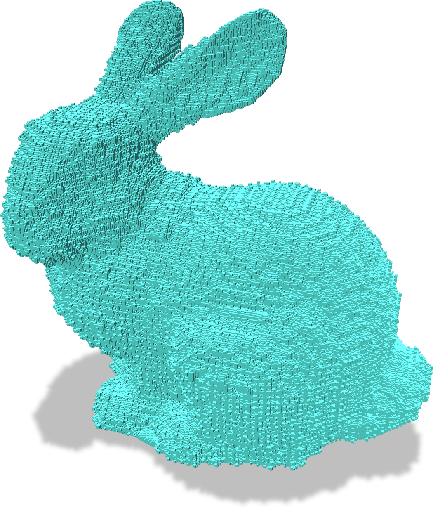

- Generated on Mon Jun 10 2024 17:36:19 for DGtal by
 1.11.0
1.11.0
|
DGtal 1.4.0
|
Part of Shapes package
This documentation describes the tool to construct a binary image from a set of oriented point clouds in \(\mathbb{R}^3\) using the generalized winding number framework of [10]. For short, from a collection of oriented points, the generalized winding number implicit function returns a scalar value at each point accounting for the number of turns of the (unknown) underling surface around that point. From [10], the implicit function for a point cloud \( \{(p_i,n_i)\}_{1..m}\) is approximated by
\[ w(q) = \sum_i^m a_i \frac{(p_i-q)\cdot n_i}{4\pi\|p_i -q\|^3} \]
where \( a_i\) is some area contribution of the point \( p_i\) to the surface (computed from the projection of the k-nearest neighbors to \( p_i\) onto the tangent plane at \( p_i \)). By thresholding the winding function with some values in \([0,1]\), we can define an iso-surface that approximates the exterior envelope of the shape defined by the oriented point cloud. For fast computations, we rely on the libigl of the generalized winding numbers.
cmake .. -DWITH_LIBIGL!true -DWITH_CGAL=true -DWITH_GMP=true)The core of the method is defined in the WindingNumberShape<Space> class. This class is a model of concepts::CEuclideanBoundedShape is the sense that once constructed, an object has an orientation( q ) method that returns the orientation (inside, outside or on) of q to the implicit surface (DGtal::Orientation).
As the WindingNumberShape class is a model of concepts::CEuclideanBoundedShape, the GaussDigitizer could be used (see Shapes, Shapers and Digitizers).
Example:
| Input point cloud | Reconstruction h=2 | Reconstruction h=1 | Reconstruction h=0.2 |
|---|---|---|---|

|

|

|

|
First, for multiple queries and to take advantage of the multithreading of the winding number backend:
The output vector contains the orientation of the query points in the same order.
At this point, we completely rely on libIGL and CGAL to estimate the \( a_i \) area measures. If the user wants to provide these quantities, the \(\{a_i\}\) can be prescribed at the constructor, or using the setAreaMeasure() method (with a skipPointAreas to true at the constructor).